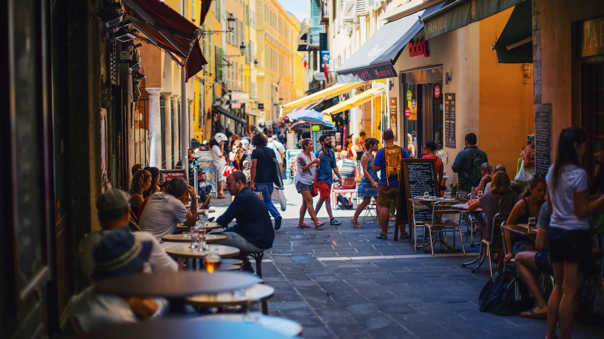
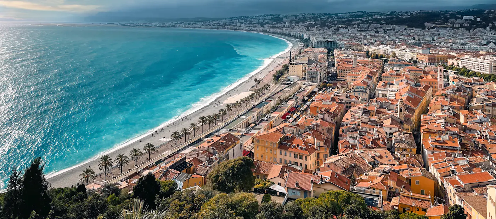
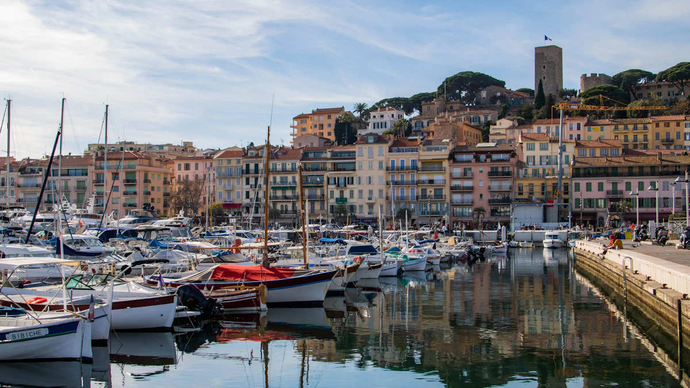
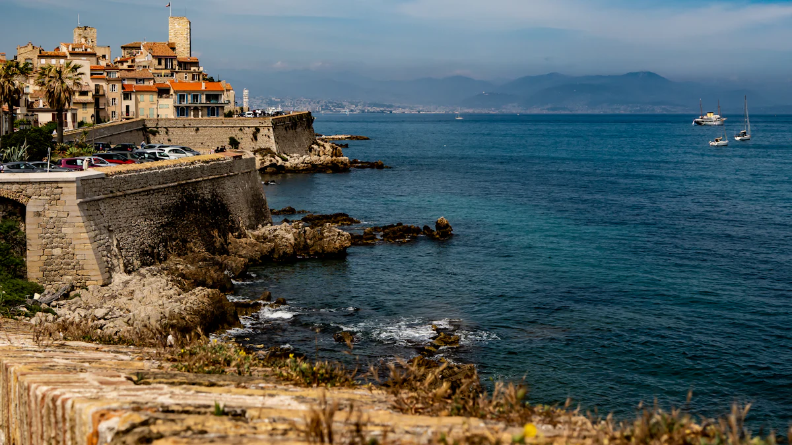
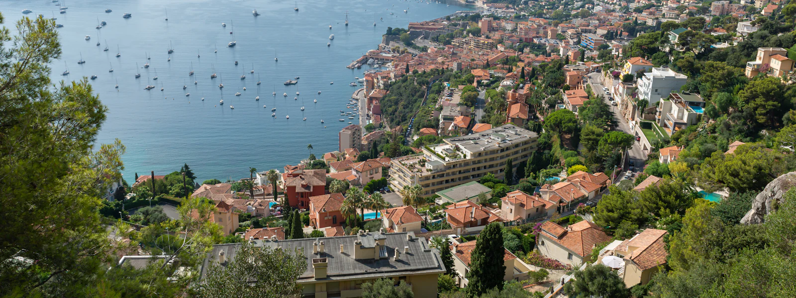
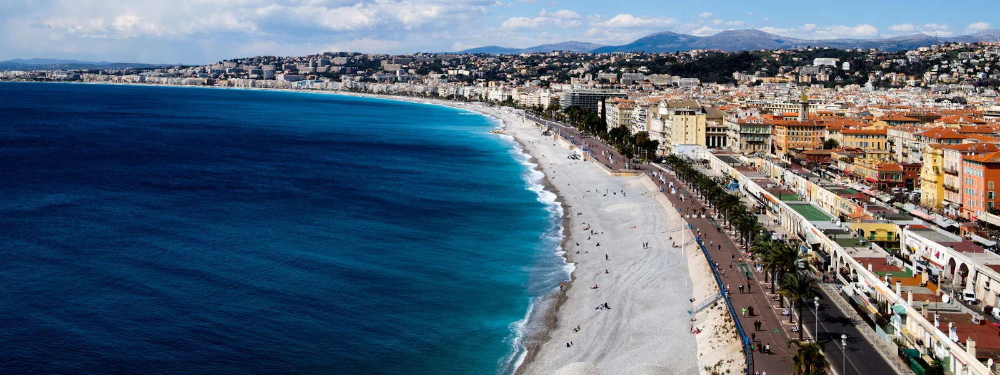

Nice
Dépannage à domicile dans tous les quartiers et maintenance pour les entreprises de la Métropole.
Informatique à NiceNous intervenons à domicile et en entreprise dans l'ensemble des Alpes-Maritimes. L'assistance à distance, elle, est disponible partout en France.


Dépannage à domicile dans tous les quartiers et maintenance pour les entreprises de la Métropole.
Informatique à Nice
Assistance pour particuliers, commerces, hôtels et agences, du Suquet à La Bocca.
Informatique à Cannes
Dépannage à domicile et support informatique pour les start-ups de la technopole.
Informatique à Antibes
Votre commune n'apparaît pas ? Contactez-nous, nous intervenons sûrement chez vous.

Où que vous soyez, nous pouvons prendre la main sur votre ordinateur de façon sécurisée pour résoudre votre problème.